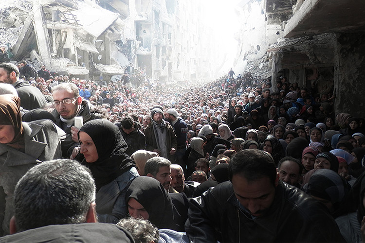

Throughout the conflict in Syria, which in its fifth year has killed more than 200,000 people and forced almost half the population to flee their homes, humanitarian access to meet the needs of civilians trapped by the fighting has been a key concern for the United Nations. In 2014, as peace talks to end the conflict stalled, UN officials appealed multiple times to both sides to allow the delivery of relief aid, but with limited success.
Pictured In January, the UN agency tasked with protecting Palestinian refugees throughout the Middle East, known as UNRWA, was permitted to deliver only small quantities of food aid to the 18,000 malnourished residents living in the besieged Palestinian refugee camp of Yarmouk in Syria. UNRWA Archives
